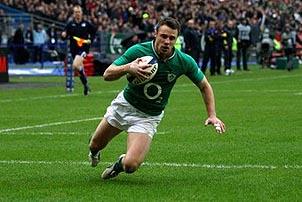

Nombre: David Castrillon
Lugar de Nacimiento: Cali, Colombia
Edad: 26

Perfil:
Ingeniero industrial, apasionado por el Rugby y la fabricación de cervezas.
Busco desarrollar constantemente nuevas habilidades que me permitan mejorar
el entendimiento de procesos y sistemas. Con experiencia en empresas de servicios,
he desarrollado distintos proyectos que van desde sistemas de gestión de calidad
análisis de capacidad, mejoramiento continuo y diseño de procesos.
Idiomas: